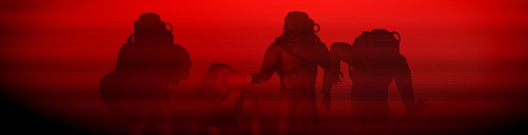

Welcome to Lethal Company
All About the Company
Lethal Company is a game that has taken the indie game community by storm. When it was released on October 23, 2023, it accumulated 100,000 concurrent players after it release; making it one of the Global Top Sellers on Steam. Even winning a award during the Steam Awards on January 2, 2024, in their 'Better With Friends' category. The game's developer, Zeekerss, orignally developed games on Roblox so this is their first game that has been availible for download. They project to finish it within the next three months, and it is heavily anticipated by its community. They update their game periodically while they continue to develop it more.
The game itself is crudely rendered but charmingly so, reminding players of older game systems that paved the way for new ones. It is a cooperative game, but can be single player, with a max amount of players at four. The players work as employees to "The Company" who they must go to moons and collect scrap for, they have three days to meet their quota or they will be ejected. Players can communicate in-game through proximity chat, as well as proximty text chat. Players start in a spaceship with a terminal and computer. The terminal allows the players to search and see the eight playable moons they can go to, the shop to buy equipment, a bestiary to keep track of entities the players encounter, and other functions. If players reach the set quota, they will start another three-day cycle to reach a higher quota.
Each moon has varying difficulty with different monsters also spawning on different moons, they also have randomly generated events that makes it more dangerous to naviagte; events meaning, storms, flooding, foggy, or eclipsed weather. But using the ships terminal, players can access tools to make their jobs managable. The terminal's store provides access to things such as: flashlights, walkie-talkies, shovels, jetpacks, ladders, and various ship upgrades. The terminal may also be used to view other characters, open doors, and disable turrets and lanndmines that may be in the building. While in the building, players must collect the various pieces of scrap but while only being able to hold four items. Some items may require two hands to carry and slow the player down quite a bit. Also players need to avoid the various enemies that spawn on their designated moons. Metal scrap may be harder to get back in stormy weather, they will randomly produce a charge and lightning will strike whether or not the player places the item down fast enough.
The enemies also make collecting scrap harder. Some scrap may make noise that attracts entities, such as the toy robot. If a player is holding a walkie-talkie that is on, then a talking teammate will also put a player at risk for being heard by unwanted ears. It is also dangerous to be holding heavy items since most of the monsters are fairly fast. There are monsters that remain docile however, a few will leave players alone if they stay away. The loot bug will on attack if it sees the player holding something it wants, the player can drop the item and the loot bug will take the item and leave. The Spore Lizard only attacks if it is cornered, otherwise it just runs away. Other than that though, every other enemy will attack players just as often as they can. The Braken stalks from a distance and will charge if stared at for too long. The Jack-in-the-Box will stop and wind then start chasing players once it pops open. Coil-Heads will approach very fast but will stop once spotted, if the player looks away though, it will start charging again until it is being looked at again.
